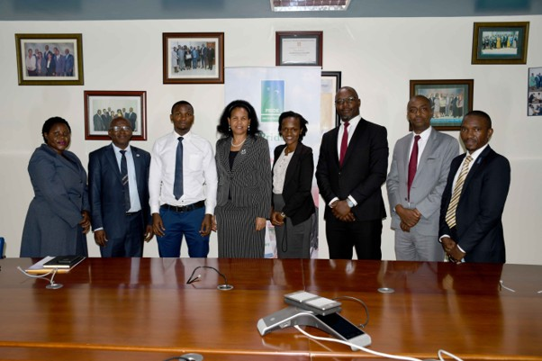

ICT Infrastructure Professional specialising in Database Administration, Data Centre Operations, Business Continuity, Disaster Recovery, High Availability and Enterprise Systems. Experienced in supporting mission-critical banking platforms through resilient architecture, operational excellence and technology risk management.
I am an ICT Infrastructure professional focused on designing, supporting and maintaining reliable enterprise technology environments. My experience spans database administration, data centre operations, business continuity, disaster recovery, cybersecurity and infrastructure support.
I have supported mission-critical banking systems, working with technologies including Oracle Database, SQL Server, Linux, Windows Server, virtualization platforms and enterprise backup solutions.
My focus is ensuring systems remain secure, available and recoverable through strong operational practices, proactive monitoring, capacity planning and continuous improvement.
Oracle Database
SQL Server
MySQL
PostgreSQL
MongoDB
Servers
Storage Systems
Virtualization
Monitoring
Capacity Planning
Business Continuity
Disaster Recovery
Backup & Recovery
Risk Management
Security Controls
Power BI
Data Analysis
Dashboards
Operational Reports
Oracle 19c
Oracle Data Guard
Oracle GoldenGate
SQL Server
MySQL
PostgreSQL
Linux
Windows Server
Solaris
Virtualization Platforms
Oracle Enterprise Manager
RMAN
Commvault
Monitoring Tools
Power BI
Data Centre & Business Continuity Specialist
Supporting enterprise data centre operations, disaster recovery readiness, infrastructure availability, backup and recovery processes, capacity planning and operational resilience initiatives.
Database Administrator
Managed mission-critical banking databases, database security, performance monitoring, backup operations, recovery processes and database improvement initiatives.
Database Administrator / Information Systems Analyst
Supported core banking systems, database administration, IT risk initiatives, system reporting, business intelligence solutions and technology operations.
Represented the Risk Management function at Pride Bank Ltd during a strategic engagement with the Deposit Protection Fund of Uganda (DPF) focused on depositor information updates and the development of an IT-enabled Payout System to enhance depositor protection, operational readiness, and business continuity capabilities.

Configured and deployed Oracle Enterprise Manager (OEM) to enable proactive database monitoring, performance tracking and health checks across enterprise database environments.
Supported Oracle GoldenGate implementation for real-time synchronization between core banking and digital channel databases, improving data consistency and system availability.
Supported critical database upgrades, backup improvements and recovery initiatives while maintaining system availability, data integrity and operational continuity.
Contributed to DR planning, recovery testing, backup validation and resilience initiatives for mission-critical enterprise systems.
Oracle Database Administration
Oracle Performance Tuning
SQL Server Administration
Data Centre Operations
Business Continuity Planning
Disaster Recovery Management
Information Security Controls
IT Risk Management
Operational Resilience
I welcome professional connections and technology discussions.
📧 Email: rashid.kalanzi@yahoo.com
📱 Mobile: +256 776 216022